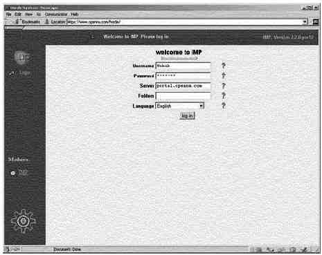

Краткий обзор
Webmail IMP дает универсальный, базирующийся на веб доступ к
IMAP/POP3 серверам и предоставляет адресную книгу, поиск по каталогу LDAP,
полную поддержку приема и отправки прикрепленных файлов и много других
возможностей, которые могут быть найдены в стандартных почтовых клиентах. Если
вы инсталлировали Apache с поддержкой SSL, то клиенты смогут получить доступ и
читать почту в безопасной манере, используя SSL шифрование. По умолчанию в этой
секции, мы будем настраивать Webmail IMP на использование базы данных PostgreSQL
и IMAP соединений. Кроме того, Webmail IMP позволяет работать с другими базами
данных. Если вам нужно, вы можете использовать MySQL, Oracle, Sybase или другие
хорошо известные базы данных SQL. Вы также можете выбрать использование POP3
соединения вместо IMAP для ваших клиентов.
Эти инструкции предполагают.
Unix-совместимые
команды.
Путь к исходным кодам "/var/tmp" (возможны другие
варианты).
Инсталляция была проверена на Red Hat Linux 6.1 и 6.2.
Все шаги
инсталляции осуществляются суперпользователем "root".
Horde версии
1.2.0
Webmail IMP версии 2.2.0
PHPLib версии 7.2b
Пакеты.
Домашняя страница Webmail IMP: http://www.horde.org/imp/
Вы должны скачать:
horde-1.2.0-pre11.tar.gz
Вы должны скачать:
imp-2.2.0-pre11.tar.gz
Домашняя страница PHPLib: http://phplib.netuse.de/index.php3
Вы должны скачать:
phplib-7.2b.tar.gz
Предварительные требования
- До использования Webmail IMP у вас должен быть установлен веб сервер
Apache.
- До использования Webmail IMP у вас должен быть установлен PHP4.
- Postgresql или другой сервер баз данных должен быть установлен, если вы
планируете использовать Webmail IMP с поддержкой SQL.
- OpenLDAP должен быть установлен, если вы планируете использовать Webmail
IMP с поддержкой LDAP.
- До использования Webmail IMP у вас должен быть установлен сервер IMAP/POP.
- До использования Webmail IMP у вас должны быть установлены файлы PHPLIB
7.2 или выше.
Для того, чтобы запустить Webmail IMP на вашем сервере, вам
надо установить PHPLib (инструментальное средство разработки веб приложений для
PHP разработчиков). Для инсталляции PHPLib выполните следующие шаги:
Пакеты
Домашняя страница: http://phplib.netuse.de/index.php3
Вы должны скачать:
phplib-7.2b.tar.gz
[root@deep /]# cp phplib-7.2b.tar.gz
/home/httpd/
[root@deep /]# cd /home/httpd/
[root@deep httpd]# tar xzpf
phplib-7.2b.tar.gz
Шаг 1
Перейдите в DocumentRoot вашего веб сервера и создайте каталог
"/home/httpd/php":
[root@deep /]# cd
/home/httpd/
[root@deep httpd]# mkdir php
Шаг 2
Копируйте содержимое каталога "php" дистрибутива PHPLib в
каталог "php", который вы создали в вашем DocumentRoot:
[root@deep /]# cd /home/httpd/phplib-7.2b/php/
[root@deep php]# cp *
/home/httpd/php/
[root@deep php]# cd /home/httpd/
[root@deep httpd]# rm -f
phplib-7.2b.tar.gz
[root@deep httpd]# rm -rf phplib-7.2b/
ЗАМЕЧАНИЕ. Мы удалили tar архив и каталог
"phplib-version", после завершения копирования каталога "php".
Компиляция
Для инсталляции программы Webmail IMP на вашем сервере
выполните следующие шаги.
Шаг 1
Копируйте horde-1.2.0-pre11.tar.gz в DocumentRoot
(/home/httpd/), раскройте его и переименуйте каталог "horde-version" в "horde",
выполнив следующие команды:
[root@deep /]# cp
horde-version.tar.gz /home/httpd/
[root@deep /]# cd
/home/httpd/
[root@deep httpd]# tar xzpf horde-version.tar.gz
[root@deep
httpd]# mv horde-version horde
[root@deep httpd]# rm -f
horde-version.tar.gz
ЗАМЕЧАНИЕ. Мы удалили tar архив, содержащий Horde, после
переименования каталога "horde-version" в "horde".
Шаг 2
Копируйте imp-2.2.0-pre11.tar.gz в ваш каталог "horde"
(/home/httpd/horde/), раскройте его и переименуйте каталог "imp-version" в
"imp":
[root@deep /]# cp imp-version.tar.gz
/home/httpd/horde/
[root@deep /]# cd /home/httpd/horde/
[root@deep horde]#
tar xzpf imp-version.tar.gz
[root@deep horde]# mv imp-version
imp
[root@deep horde]# rm -f imp-version.tar.gz
ЗАМЕЧАНИЕ. Важно, чтобы каталог "imp" находился в
каталоге "horde", иначе Webmail не будет работать. После переименования каталога
"imp-version" в "imp" мы удалили архив содержащий IMP Webmail.
Шаг 3
Измените владельца каталога "horde" и всех его подкаталогов и
файлов на "root" из соображений безопасности.
[root@deep /]# chown -R 0.0 /home/httpd/horde/ Шаг
4
Копируйте файлы "/home/httpd/horde/phplib/*.ihtml" в новый
каталог "php" (/home/httpd/php/), выполнив следующую команду:
[root@deep /]# cp /home/httpd/horde/phplib/*.ihtml
/home/httpd/php/
Мы сейчас должны сконфигурировать нашу базу данных на работу с
Webmail IMP. Самый простой способ для этого - использовать предопределенные
скрипты расположенные в подкаталоге "/home/httpd/horde/imp/config/scripts/". Для
PostgreSQL выполните следующие шаги.
Шаг 1
Первое, вы должны редактировать скрипт "pgsql_create.sql",
связанный с PostgreSQL и расположенный в подкаталоге
"/home/httpd/horde/imp/config/scripts". Измените в нем принятое по умолчанию
значение имени пользователя от которого запускается "httpd" на "www".
Редактируйте файл pgsql_create.sql (vi
/home/httpd/horde/imp/config/scripts/pgsql_create.sql) и измените строку:
GRANT SELECT, INSERT, UPDATE ON
imp_pref, imp_addr TO nobody;
на:
GRANT
SELECT, INSERT, UPDATE ON imp_pref, imp_addr TO www;
Шаг
2
Сейчас, мы должны определить пользователя для Apache ("www") в
вашей базе данных PostgreSQL, чтобы можно было создавать базы данных Webmail IMP
этим пользователем.
Для определения пользователя "www" в вашей базе данных,
запустите утилиту createuser из PostgreSQL:
[root@deep /]# su postgres
[postgres@deep /]$ createuser
Enter
name of user to add ---> www
Enter user's postgres ID or RETURN to use
unix user ID: 80 -> [Press Enter]
Is user "www" allowed to create
databases (y/n) y
Is user "www" a superuser? (y/n) n
createuser: www was
successfully added
Шаг 3
После того, как пользователь "www" включен в базу данных
PostgreSQL, подключитесь к PostgreSQL (в нашем случае как "postgres") и
запустите небольшой скрипт, который автоматически создаст Webmail IMP базу
данных в PostgreSQL:
[root@deep /]# cd /home/httpd/horde/imp/config/scripts/
[root@deep scripts]# su postgres
[postgres@deep scripts]$ psql template1 < pgsql_create.sql
// IMP database creation script for postgreSQL
// Author: [email protected]
// Date: Aug-29-1998
// Notes: replace "nobody" with yours httpd username
// Run using: psql template1 < pgsql_create.sql
CREATE DATABASE horde;
CREATEDB
\connect horde
connecting to new database: horde
CREATE TABLE imp_pref (
username text,
sig text,
fullname text,
replyto text,
lang varchar(30)
);
CREATE
CREATE TABLE imp_addr (
username text,
address text,
nickname text,
fullname text
);
CREATE
GRANT SELECT, INSERT, UPDATE ON imp_pref, imp_addr TO www;
CHANGE
EOF
Шаг 4
Мы должны перезагрузить сервер PostgreSQL, чтобы изменения
вступили в силу:
[root@deep /]#
/etc/rc.d/init.d/postgresql restart
Stopping postgresql
service: [ OK ]
Checking postgresql
installation: looks good!
Starting postgresql service: postmaster
[13474]
Шаг 5
Копируйте и переименуйте файл
"/home/httpd/horde/phplib/horde_phplib.inc" в "/home/httpd/php/local.inc", затем
редактируйте новый "local.inc", который является конфигурационным файлом phplib,
содержащим установки, определяющие поведение phplib.
[root@deep /]# cp /home/httpd/horde/phplib/horde_phplib.inc
/home/httpd/php/local.inc
cp: overwrite `/home/httpd/php/local.inc'?
y
Редактируйте файл local.inc (vi /home/httpd/php/local.inc),
раскомментируйте и установите следующие строки для определения SQL как вашей
базы данных по умолчанию:
/* Для использования базы данных SQL раскомментируйте и редактируйте
следующее: */
class HordeDB extends DB_Sql {
var $Host = 'localhost';
var $Database = 'horde';
var $User = 'www';
var $Password = 'some-password';
var $Port = '5432';
function halt($msg) {
printf("<b>Database error (HordeDB):</b> %s<br>\n", $msg);
}
}
class HordeCT extends CT_Sql {
var $database_class = 'HordeDB'; // Какой класс базы данных использовать:
var $database_table = 'active_sessions'; // и находить наши данные в таблице.
}
ЗАМЕЧАНИЕ. Не забудьте раскомментировать в этом файле
тип контейнера для хранения информации, который вы хотите использовать в Webmail
IMP. Помните, надо раскомментировать только один тип. В нашем случае мы выбрали
SQL базу данных "var $User =", "var $Password =" и "var $Port =". "var $User ="
соответствует вашему httpd пользователю (у нас "www"), "var $Password ="
соответствует паролю для пользователя "www", определенного в PostgreSQL, и "var
$Port =" - это номер порта используемого для соединений с базой данных
SQL.
Шаг 6
В заключении, редактируйте файл "/home/httpd/php/prepend.php3"
и определить тип вашей базы данных.
Редактируйте файл prepend.php3 (vi
/home/httpd/php/prepend.php3) и измените в нем следующие строки для определения
PostgreSQL как тип ваше базы данных:
require($_PHPLIB["libdir"] .
"db_mysql.inc");
на:
require($_PHPLIB["libdir"] . "db_pgsql.inc");
Еще вам надо настроить конфигурационный файл PHP4
"/etc/httpd/php.ini". Изменения вносимые в него зависят от того, какие
возможности (такие как IMAP, PostgreSQL и др.) должны загружаться автоматически
PHP4. Так как мы решили использовать PostgreSQL для хранения информации и IMAP
возможности Webmail, мы должны определить их в файле "php.ini".
Шаг 1
Редактируйте файл php.ini (vi /etc/httpd/php.ini) и добавьте в
секции Dynamic Extensions необходимые библиотеки. В нашем случае, как вы видите,
мы выбрали поддержку IMAP и PostgreSQL:
extension=imap.so ; Добавляет поддержку для IMAP
extension=pgsql.so ;
Добавляет поддержку для PostgreSql
extension=mysql.so ; Добавляет поддержку
для MySql
extension=ldap.so ; Добавляет поддержку для
LDAP
Шаг 2
Вы должны указать "php", где ему искать включаемые файлы, когда
они не имеют абсолютных путей, автоматическое прибавление содержимого файла
"prepend.php3" к каждому файлу, и отключение magic quotes.
Редактируйте файл
php.ini (vi /etc/httpd/php.ini) и добавьте следующие параметры:
magic_quotes_gpc = Off
auto_prepend_file =
"/home/httpd/php/prepend.php3"
include_path =
"/home/httpd/horde:/home/httpd/php"
После инсталляции Webmail IMP на вашей системе, мы должны
добавить следующие строки в файл "httpd.conf", чтобы иметь возможность находить
и использовать его возможности.
Шаг 1
Редактируйте файл httpd.conf (vi /etc/httpd/conf/httpd.conf) и
добавьте следующие строки между тэгами секции <IfModule mod_alias.c> и
</IfModule>:
Alias /horde/ "/home/httpd/horde/"
<Directory "/home/httpd/horde">
Options None
AllowOverride None
Order allow,deny
Allow from all
</Directory>
Alias /imp/ "/home/httpd/horde/imp/"
<Directory "/home/httpd/horde/imp">
Options None
AllowOverride None
Order allow,deny
Allow from all
</Directory>
Шаг 2
Вы должны перезагрузить Apache, чтобы изменения вступили в
силу:
[root@deep /]# /etc/rc.d/init.d/httpd restart
Shutting down http: [ OK ]
Starting httpd: [ OK ]
Существует несколько путей для настройки Webmail IMP, и один из
них, который мы выбрали, новый механизм настройки называемый "setup.php3",
который дает людям возможность настраивать IMP через веб броузер.
Шаг
1
Из соображений безопасности, эта возможность отключена по
умолчанию, но мы можем ее включить следующими командами:
[root@deep /]# cd /home/httpd/horde/
[root@deep horde]# sh
./install.sh
Your blank configuration files have been created, please go
to
the configuration utitlity at :
your install path
url/setup.php3
Шаг 2
После того как новый механизм настройки Webmail IMP включен,
введите в вашем броузере следующий адрес:
http://my-web-server/horde/setup.php.
ЗАМЕЧАНИЕ. <my-web-server> - адрес вашего веб
сервера, а "/horde/" это каталог где находится файл "setup.php".
Шаг 3
После того как вы закончите настраивать Webmail IMP,
обязательно отключить "setup.php", из соображений безопасности:
[root@deep /]# cd /home/httpd/horde/
[root@deep horde]#
sh ./secure.sh
Это переведет все файлы и библиотеки в режим 0555
(чтение/исполнение для всех), а setup.php в режим 0000, который запретит любой
доступ.
Шаг 4
На этой стадии, мы должны проверить работоспособность Webmail
IMP. Чтобы сделать это, наберите в окне броузера следующий адрес: http://my-web-
server/horde/. <my-web-server> - это адрес, где находится вашего веб
сервера, а </horde> - это каталог в котором располагается программа
Webmail IMP.
